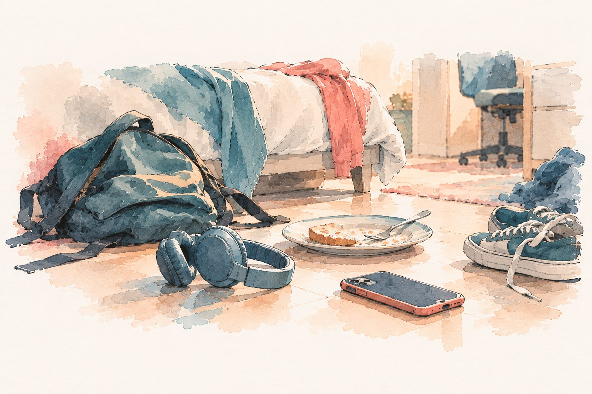

Evaluación Familiar del Adolescente
Tres sesiones y un informe con un plan para entender la situación familiar y orientar los próximos pasos. No es terapia.
Ver cómo funciona ↓Apoyo psicológico para adolescentes y familias
Primer paso: Evaluación Familiar del Adolescente
Un espacio para ordenar lo que está pasando, no para diagnosticar de entrada.
Responde con monosílabos. La puerta de la pieza está cerrada más rato que antes. Cualquier pregunta suena a interrogatorio. Aparece ansiedad, distancia, problemas en el colegio, o conversaciones que terminan en pelea o silencio.
No necesitas tener claro qué le pasa antes de consultar. Parte de mi trabajo es ayudarte a ordenar la situación y definir el siguiente paso.
Cuándo pedir apoyo
Puedes consultar si notas…
Consultar temprano ayuda a saber si es parte del proceso o si conviene mirarlo más de cerca.

Cómo podemos trabajar
Tres sesiones y un informe con un plan para entender la situación familiar y orientar los próximos pasos. No es terapia.
Ver cómo funciona ↓Un espacio clínico para dificultades emocionales, escolares, familiares o sociales.
Sesiones para ordenar lo que observan, revisar cómo acercarse y decidir qué hacer.
Si aparecen señales de riesgo —autolesiones, ideas de muerte, violencia o consumo problemático—, esto necesita atención inmediata. Salud Responde: 600 360 7777. Prevención del suicidio: *4141.
Evaluación Familiar del Adolescente
Conversamos juntos sobre lo que está pasando en casa: cómo lo vive cada uno y qué les preocupa.
Un espacio propio para escuchar su mirada, sin adultos de la familia presentes.
Te explico lo que observé: qué está pasando, qué conviene mirar más de cerca y por dónde empezar.
Por escrito, con los próximos pasos para tu familia y la orientación sobre qué apoyo conviene, si hace falta.
No es terapia: es un proceso breve para entender qué está pasando antes de decidir qué hacer.
Conversemos sobre la evaluación ↗Método NIDO®
Una rutina diaria de 10 minutos, sin pantallas, para volver a conectar con tu hijo o hija de 10 a 18 años. No buscamos 10 minutos perfectos: buscamos 10 minutos reales.
Toca cada letra para ver qué significa
Antes de acercarte, te miras tú. Este paso es para ti, no para tu hijo: sin calma propia no hay conexión.
Durante 30 a 60 segundos observas su rostro, su tono y su postura antes de hablar. Interpretar no es adivinar: es ubicar cómo viene en el semáforo.
Según el color del semáforo, preguntas, escuchas o simplemente estás a su lado sin exigir. La presencia constante es el mensaje.
No corriges, no opinas, no resuelves. A veces un «ah» vale más que diez consejos.
Un gesto pequeño antes de salir, sin consejos de último momento, y avisas que vas a volver. No es presión: es continuidad.
«No importa si hoy no me hablas; voy a estar aquí si me necesitas.»
NIDO® no busca cambiar a tu hijo ni eliminar los conflictos propios de la adolescencia. La constancia de tu presencia es más poderosa que la perfección de tus palabras.
No necesitas llegar con un diagnóstico ni decidir de antemano qué tipo de apoyo buscar.
Dar el primer paso ↗